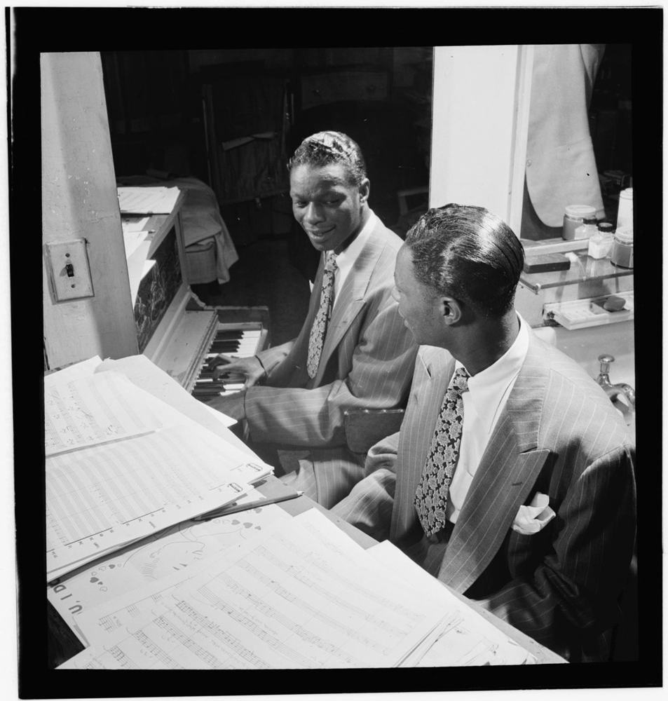

故事
一首最有名的聖誕歌，是在大熱天寫出來的。1945 年七月，洛杉磯熱得要命。作詞人 Bob Wells 想讓自己涼快一點，在筆記本上寫下冬天的畫面。
爐火、栗子、下雪的街。歌手 Mel Tormé 來找他，看到了這幾行字。據說兩個人只花了大約四十分鐘，就把歌寫完。

隔年，Nat King Cole 把它錄成唱片。他前後錄了好幾次，1961 年的立體聲版本最常被播。寫歌的 Mel Tormé，自己也是很會唱爵士的歌手。收藏起來，下次聽到 The Christmas Song，想想那個大熱天。
故事後面
一九四五年七月，洛杉磯天氣很熱。作詞人 Bob Wells 想讓自己涼快一點，寫下冬天的畫面。
歌手 Mel Tormé 看到後，據說兩人大約四十分鐘就完成這首歌。
Nat King Cole 隔年錄下，之後又錄了好幾次，一九六一年的立體聲版本最常在聖誕節聽到。
這樣聽
聽他溫暖的低音，和背後弦樂慢慢鋪開的聲音。
逐句英文
One of the most famous Christmas songs was written on a sweltering day.
In July 1945, Los Angeles was baking hot.
Lyricist Bob Wells, trying to cool off, jotted down winter images in a notebook.
A fire, chestnuts, snowy streets.
Singer Mel Tormé came by and saw those lines.
Reportedly the two finished the song in about forty minutes.
The next year Nat King Cole recorded it.
He recorded it several times; the 1961 stereo version is the one played most.
Mel Tormé himself was a terrific jazz singer.
Save this. Next time you hear The Christmas Song, think of that hot summer day.
查證筆記與出處
「四十分鐘」是 Tormé 回憶，寫據說。「爐火、栗子、雪」是畫面描述，沒有引用歌詞原文。
https://en.wikipedia.org/wiki/The_Christmas_Song
https://en.wikipedia.org/wiki/Mel_Tormé
一分鐘影片版在 Instagram @jazz101tw。